THE CHAOS BRIGADE · JOURNAL 01 · NEVERWINTER
The guards asked for ten gold each, and Rocketcandy gave them his name instead.
It worked. I want that on the record. I set a price, the paladin countered with
being himself, and the dice said that was legal. Eighteen plus four: twenty-two.
The guards waived the tax, clasped forearms with him like a brother, and waved
four adventurers into Neverwinter free of charge. (Chip was already across town,
having left the isle early and walked in overland that morning with several tons
of owlbear. Vadania hadn't met us yet. Counting, as you will learn, is a theme.)
This is the part of the story where I remind you that I am the Dungeon Master.
I built this city. I stationed those guards. I decided what the entry tax was.
And within eleven minutes of arriving, my players had converted a toll booth
into a family reunion and spotted the secret criminal conspiracy I had tattooed
onto two of the guards' wrists — a conspiracy they were not supposed to notice
for another three sessions.
My name is Ben. I run the game. Nothing in this book went the way I planned.
That is the entire point of this book.
Pour something. We begin at the docks.

Chapter 1 — The Downtime Diaries
A month passes between adventures, and a responsible Dungeon Master asks what everyone was doing. A responsible party answers with journals. I have kept these journals. I have read these journals. What follows is condensed, because one of them is titled "Chronicles of Rocket Candy" and it is exactly as long as you fear.
Rocketcandy spent the month on cliff duty, hurling stirges like javelins off the observatory rocks, and reports all of this the way other people report the weather. Eighteen armor class — how hard he is to hit, for the civilians — and stayed, in his words, "to become a legend." He then describes exiting a cave trailing marine layer behind him purely, and I quote, "because I enjoy the aesthetic of walking out of the mist like a storm made flesh." I did not ask him to read that part aloud. Nobody can stop him from reading things aloud.
Shade's contribution is titled "absolutely not diary of shade," which tells you most of what you need, and describes a coin landing on its edge, the wind pausing, and an unseen hand moving pieces across some board. His conclusion: "I do not intend to be a pawn." Four sentences. The man rations words like trail rations, and every one of them is doing threat assessment.
Gulgrim stayed on the isle making potions and meditating on what it means to heal and protect people, which is the single healthiest month anyone in this party has ever had, and nobody has tried to replicate it since.
Keechwah went to the archives. Bargained with traveling sages — a horned tiefling warlock, skin an unnatural red-brown the table has agreed not to stare at. Hunched over candlelight comparing arcane theories, testing the pact magic instead of merely wielding it — a warlock's power comes through a patron, an otherworldly being he has a deal with, which is the whole arrangement — recording everything in a growing grimoire. His thesis, boiled down: true power is constructed, not stumbled upon. It is the most disciplined thing anyone at my table has ever said, and I need you to remember that, because within the week he will be staring at his own empty hand while his god ignores him.
Chip left the isle early — for Neverwinter, for the stars. Star-maps. Beginner stonehenges, dragged into place by Water Bear — Albert on the bad days, same bear, and nobody has ever gotten an explanation. Suspicious rope and horse tack he declines to explain. Chip's months are indistinguishable from his days, which is either enlightenment or the druid lifestyle, and I have stopped trying to tell the difference.
Chapter 2 — Ten Gold to Walk In
Neverwinter holds thirty to forty thousand people, and charges ten gold a head to look at them. The party's ferry docks at midday. The guards want forty gold. The party has just enough history with money to find this offensive.
Rocketcandy steps forward. "Well, excuse me, guards. Have you guys not heard of the legendary Rocketcandy yet?"
Reader: I need you to understand something about Dungeons & Dragons. When a player tries something like this, they roll a twenty-sided die, add a bonus, and the total decides whether the world cooperates. This was, by any honest measure, an absurd thing to attempt on six armed tax collectors. Andrew rolled an eighteen, plus four: twenty-two. The world cooperated.
The guards knew his name. Knew his family. One of them clasped forearms with him, and Rocketcandy — who did not remember this man at all — returned the gesture with total confidence, because that is what you do when you are the protagonist of the Chronicles of yourself. ("I returned the gesture. I don't remember him, but I returned the gesture." Verbatim. I keep it framed.)
Meanwhile Shade is doing what Shade does, which is looking at the thing nobody mentioned. Of six guards, one or two bear a small sigil inked inside the wrist. Shade clocks it. Ben files it. The tax collector has it.
Partway through the afternoon, in the city, a fifth player arrives. Derek — that's the player; Vadania, wood elf ranger, is the character, and I will use whichever name the moment deserves — joins the table nineteen minutes into the session having missed the entire adventure to date, and covers it the way you cover a late arrival to a tavern: by announcing he has been training for revenge, alone, for his family, and is now, finally, peppy. "Since I met you guys, I've been pretty peppy in spirits. Now that I finally feel like I have some friends and been a loner for such a long time, it's nice to have you guys around." The party adopts him instantly. Loneliness is the one backstory nobody at this table is willing to fail a check against. Chip, meanwhile, is already on the mainland — he left the isle early and walked into the city overland that morning, bear and all. He will rejoin this story through the back door of a general store, and it will not go well. He does not meet the rest of the party again until our next session; the group walks north as five, and stays five, for the rest of this book.
Then they walk into my city, past the dragonborn and the goliaths and the market crowds, and tell the innkeeper absolutely everything. But that is the next chapter.
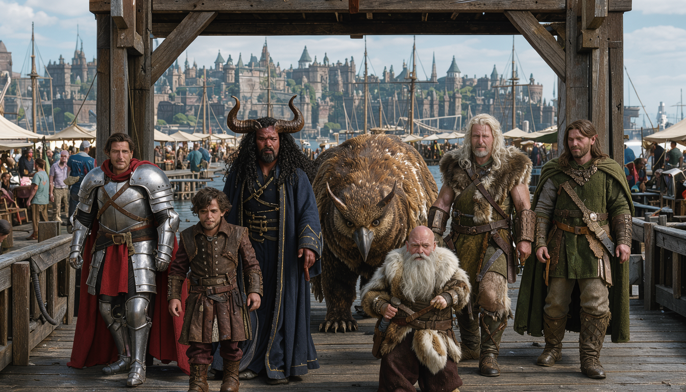
Chapter 3 — Marigold's
Marigold's Inn is the kind of place adventurers dream about between dungeons: low beams, candlelight, a hostess built entirely out of welcome. Marigold herself is a halfling innkeeper with tiny curls and a warm rosy face, shorter than her own bar — the party realizes she is a halfling the way you realize a door is locked, by walking directly into the fact. She seats five armed weirdos, recites sandwiches, soups, and roasted meats from memory, and asks for their story.
Reader, they give it. All of it. Vadania — nineteen minutes into knowing these people — announces, "We just happen to be here," and, and I quote the table, they "proceed to tell her our entire story of our adventures." Operational security: zero. Appetizers: excellent. Rocketcandy orders roast meat and potato and wine and goes terse, which for him means brooding. Keechwah orders something distilled from a potato and something bubbly, and at one point informs the table that his partner seems "a little dark complected" and the bones should be left down, a sentence I have replayed four times and understand less with each pass. Derek gets ale and chicken. Shade gets whatever she recommends, because Shade has never once in his life ordered wrong.
Around them, the room talks: merchants in from the south with stories about the weather turning sideways for no reason, minstrels complaining it is unseasonably warm, tide gossip, pockets of chatter. I laid all of this out like a dessert tray. Nobody touched it. They were too busy telling a civilian innkeeper about the time they fought a dragon.
Vadania says the word "dragon."
Marigold screams.
The whole room startles. Chairs scrape. And Ben, who has run halflings for years, watches his halfling innkeeper explain between gasps that her people do not have positive experiences with dragons, that they quite terrify her, and then — because the party has mentioned mushroom people in passing — sit in absolute awe of the revelation that mushroom people exist. "How? What could possibly be next? My heart!" she says, hands to her chest, and I want you to picture it: a three-foot woman who has just learned two impossible things before dessert, holding her heart like it might file a complaint.
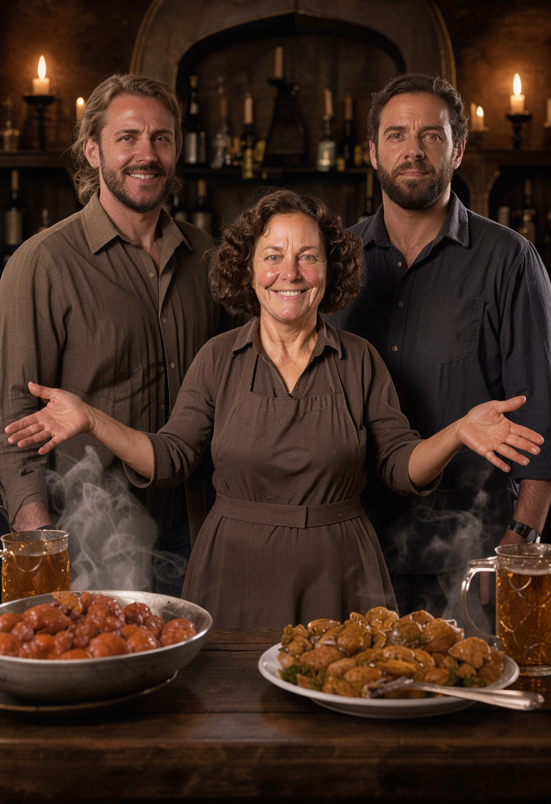
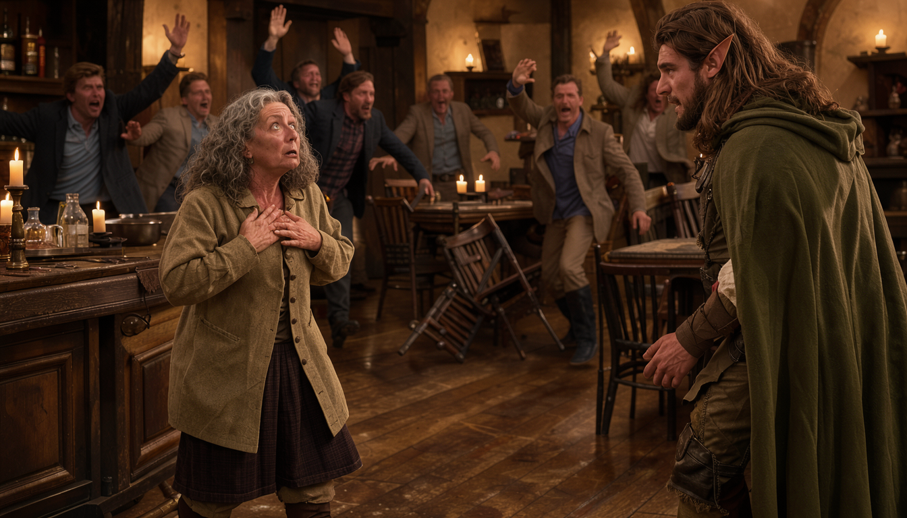
Chapter 4 — The Man Who Chose to Be Mysterious
The stranger in the corner has been sitting there through all of this — the screaming, the mushroom-people awe, the appetizers — doing absolutely nothing, which in my experience is either a sign of a very good assassin or a very committed bit. He wears a long cloak with deep green filigree, boots with silver buckles, and a hood so deep that the face inside is just mist and pipe smoke. A half-finished bowl of soup steams in front of him. He has not touched it. Nobody lets soup go cold for atmosphere unless they mean it.
Gulgrim points. Gulgrim does not do subtle. "Well, that guy clearly knows something," he announces, at volume, and walks over.
I should pause here to explain something about Gulgrim's player. James plays a dwarf cleric the way a battering ram plays a door. Subtlety is available at his table; he simply declines to order it. He introduces himself. He sits down. He waits to see what happens.
What happens is wonderful. The figure drops the menace like a stage curtain. The hood comes down and underneath is the least dangerous man in Neverwinter: a kindly old gentleman, gray beard, warm laughing eyes, delighted to have an audience. "Dark and mysterious," he explains. "It's my decision." The cloak, he says, does all the work. He owns a local apothecary. He buys a round — or the equivalent — and asks to hear their journeys, and the party, having learned nothing from Marigold, prepares to tell this stranger everything too.
I love these people. I need you to know that before we go on. Every word of it is true and none of it is safe.
Marigold, meanwhile, has been watching the door like a woman timing a roast, and now she leans in, conspiratorial, all three feet of her, and points the party at the job board outside by the beer garden. Work. Gold. The thing adventurers are supposedly for. Behind her in the kitchen doorway, Sammy the cook waves a ladle in agreement and launches soup several feet in the wrong direction. Nobody at the table sees this as an omen. It is, in retrospect, the most accurate forecast of the evening.


Chapter 5 — The Kitten and the Six Hundred Gold
The job board stands next to the beer garden, which is exactly where you put a job board if you want every decision made within arm's reach of ale. It is covered — dozens of overlapping notices, and I described every one of them, because I am a professional and professionals commit to the bit. Lost calico kitten. Restaurant work, ten a day. A coffee cart. Construction, twenty a day. Dollar amounts everywhere, none of them large, all of them flapping in the sea breeze like the board is trying to fan itself.
Vadania announces his system: he will filter for the highest pay. Biggest number wins. What could go wrong.
What goes wrong is the table, not the board. We lose five full minutes to the virtual tabletop — campaign links, access toggles, "did that go through, I don't see it," whether everyone can roll for everyone. This is the glamorous reality of modern Dungeons & Dragons: six heroes, one haunted job board, and a software permissions screen. Derek rolls perception for Vadania. The die comes up one.
A natural one. The worst possible result. In this game that is not merely failure, it is failure with style — the universe noticing you specifically. Vadania stares at the board and sees nothing: hundreds of jobs, master tracker, keenest senses in the party, and he cannot find a single one worth taking. Decision fatigue sets in like fog. "Sounds about right," Derek says. "Terrible roll." He owns it completely, which is the only correct response to a one, and the rest of the table laughs the way you laugh at a funeral — with love, and relief that it is not you.
Then Keechwah steps up, pulls aside the lost kitten poster —
— and there is a second poster underneath. Weathered. Old. Half-hidden behind a kitten for who knows how long: six hundred gold, "for those who are brave at heart," and a north-district address.
Keechwah rolled seventeen (eighteen minus one — warlocks take their bonuses where they can get them). One point of difference on a twenty-sided die is the distance between a calico and a fortune, and Aaron found it by checking behind the cat, which is either diligent investigation or the behavior of a man who has owned cats. Rocketcandy recognizes the address: the fancy end of town, uphill, the money district. The party commits. Six hundred gold. North. never mind the kitten.
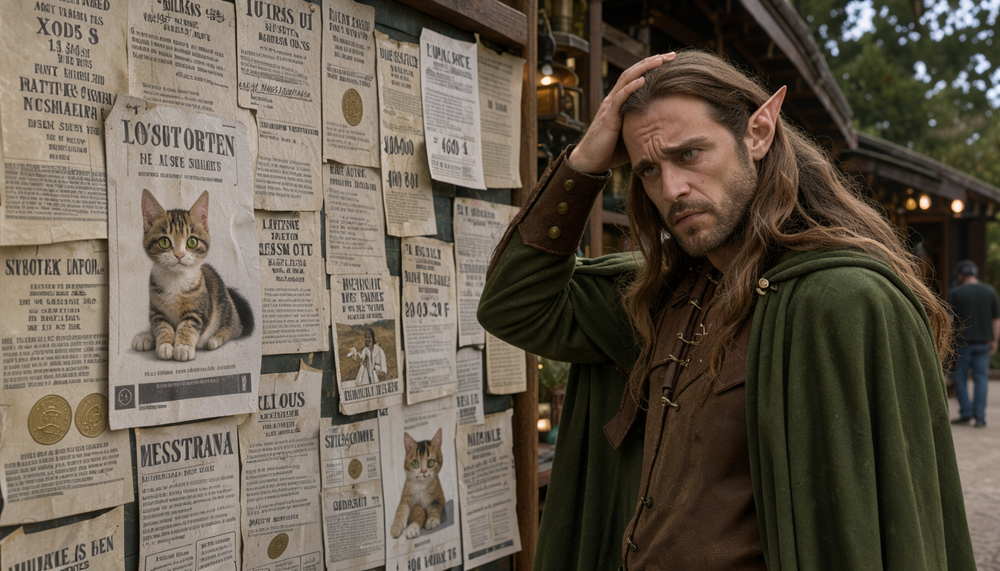

S1 · The peel — Decision fatigue, then diligence.
Chapter 6 — THIEVES!!
They walk out of Marigold's into evening, full and gold-drunk and pointing themselves north — and walk straight past the thing Shade has been warning about since the docks. Stall to stall down the market street, the city guards are doing the rounds. And at every stall they leave, the merchant is upset. Crying, shaking, counting coins that are no longer there. The party notices. The party, to its credit, notices together, which for this group counts as tactical coordination.
Then the inn doors fly open behind them.
Sammy the cook bursts out waving a bill menu over his head like a battle standard, mouth open, apron flapping, and screams the single word that reorganizes everyone's afternoon: "THIEVES!!"
Four city guards whip around. Swords come out. Four armed men in ornate helms with red plumes march on a cook, and Marigold — who has seen this episode before, who has run this episode before — comes rushing out after him, all barely-three-feet of her, one hand held out for coins and the other smacking Sammy around the head and shoving him back inside. "Sam, you always overreact," she says. "That'll be two gold."
Gulgrim pays four. "I gave her four," James says later, with the quiet satisfaction of a man settling a tab and a conscience at once. Overpays out of sheer relief. Nobody at the table questions it. This is the party economy: Rocketcandy talks, Gulgrim tips, Shade watches, and the world keeps turning.
Because here comes Rocketcandy, crest out, voice steady, stepping between four drawn swords and one doomed cook with the same instrument he used at the docks that morning: himself. "Hey, I'm former nobility around here. These are my friends. We're good." The dice agree — the swords go back in their sheaths — and one of the guards clasps forearms with him. Again. Second time today. Rocketcandy collects brotherhood rituals from extortionists the way other paladins collect scars.
And then Gulgrim looks at the wrists. Twenty-two on perception — the dwarf's eyes go where Shade trained them that morning — and the wrists all bear the ink. The whole squad. Same sigil as the docks.
Vadania whispers it first: "culty sigils?" And Shade, who has been quiet for most of an hour, delivers the session's thesis in one flat rogue's report: guild members. Protection tax. Outside the magistrate's purview. Filling their own pockets. The quietest man at the table names the entire conspiracy while everyone else is still doing lunch math, and the table goes silent the way tables go when the paranoid one turns out to be the informed one.
Here is the part I am proudest of them for, and I mean it: they do the math and decline. Four guards, full kit, in the street, over a shakedown that is not — today — their fight. "We can't take a team skill," somebody mutters, which is party slang for we would lose, and they bank it instead: remember the ink, remember the star, go north, come back a level or two heavier. Discretion, from this group. I nearly called a break to mark the occasion.
Walking north they test it. Most patrols are clean — working stiffs, honest helmets. The occasional one carries the sigil. And Gulgrim, once told what to look for, starts seeing the rest of it unprompted: the capes a slightly different shape on the inked ones, the shin and thigh guard-markings close but not identical. The whole conspiracy has a uniform, and the dwarf clocked the tailoring. Somewhere in the middle of all this, the table detours into a eulogy for a surgery-recovering cat and Bob Barker's memory — "responsible pet owners," somebody intones, and the guild conspiracy has to wait while the party honors a game-show host. I allowed it. I allowed all of it. The conspiracy will keep. Bob Barker would have wanted it this way.
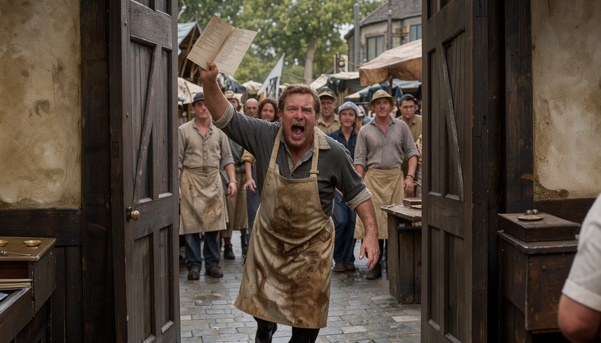
S2 · The eruption — Scream, swords, smack — four seconds.
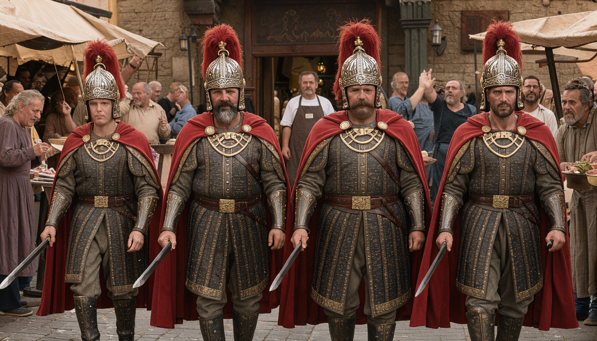
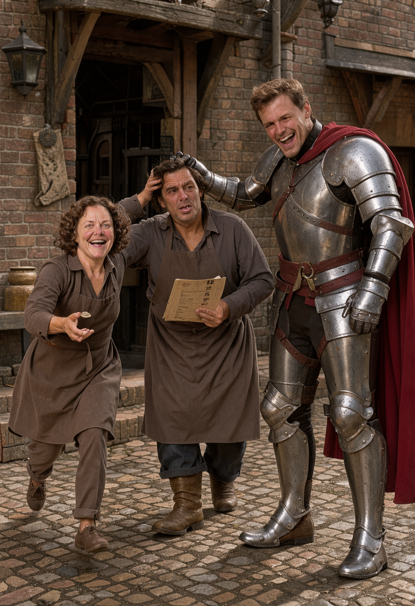
Chapter 7 — Good and Ready (Chip, Alone)
That morning — hours before anyone walks north arguing about capes, the sixth member of this book walks straight into the session's best fight with both hands in his pockets.
Chip had come overland to Neverwinter from the eastern forest that morning, alone except for several tons of owlbear, and entered through the old eastern ruins — a patched, half-ruined wall with no active work crew, the kind of civic project everyone has agreed to stop noticing. Below it sprawls a tent city of soldiers: legions camped on the march, watching a druid and his water bear walk past like a parade they were not invited to. Every head turns. Chip waves, presumably. Chip would wave.
The market directs him to a general-goods store called Good and Ready, and here the afternoon achieves its purest form. Chip enters with Water Bear. Water Bear fills the doorway the way weather fills a valley. Water Bear's shoulder catches a shelf. A vase wobbles. Chip — barefoot reflexes, druid grace, eleven against a difficulty of ten — sticks out one foot and kicks the vase back into place mid-air. The vase is saved. The vase is also now rolling loudly across the shelf, and the proprietor comes out shouting "get it out!" with the particular fury of a man whose merchandise was just drop-kicked by a customer.
The proprietor reads Chip head to toe — woods-dirt, feathers, the whole feral apparition — and produces a slur for it, one of those fantasy bigotries that translates, loosely, to hippie. Browse, he says. Pay at the counter. Chip, genial as sunrise, tells Water Bear — "Albert," he calls him, a name that appears exactly once in the record and is never explained, and I have chosen to love it rather than solve it — to wait outside. The bear obeys. The bear is the most professional person in this building.
Then three city guards walk in — plain-steel patrol issue, none of the market square's red-plumed parade dress — and the temperature of the scene drops ten degrees. They go to the counter. They talk quietly with the proprietor. Chip, whose curiosity is a load-bearing character trait, tries to listen in: stealth seven (they notice), perception nine (he catches nothing but the tone, which is unpleasant the way smoke is unpleasant). So he browses louder, which is Chip's version of subtlety, and waits for the weather to change. It changes toward him.
One of the guards recognizes him. In here a few weeks ago, he says. Which gate did you come through? Chip says the Southwest. The guards note, with professional patience, that he was not there this morning. A sword slides out and rises until the point sits under Chip's chin, and the guard asks him, almost gently: "You wouldn't lie to me now, would you?"
Reader, he would. He did. Chip's deception totals around eleven, and the guard looks at him the way teachers look at unsigned homework and says the sentence that ends the talking phase: "You're a dirty liar."
The shakedown lands: double for the bear — forty gold. Chip, to his eternal credit, does not argue the rate. He agrees to pay. He reaches for the pouch — and fumbles it, sleight-of-hand gone sideways, coins flashing where coins should not be, and the guard's hand snaps around his wrist and finds excess gold. The grip tightens. The third guard turns. This is the moment, in the transcript, where the session holds its breath — and where the proprietor, who has been quiet behind his counter for ten minutes, picks up a cast-iron pan and ends the encounter.
BOOM. BOOM. Two guards drop like stage scenery.
The third still has Chip's wrist. So Chip — who has spent the entire session being mild — narrates his own stunt: the guard turns to face the other way, and Chip's immediate reaction is "a behind-the-leg sweep, knock him straight to the ground." An opposed roll — both sides roll, higher wins: Chip sixteen, the guard nine. Down he goes, pinned, and the proprietor steps in with the pan and finishes the set with a WHANG to the forehead. Three guards. One druid. One shopkeeper. One pan. Total party damage taken: a wrist that got grabbed.
The proprietor talks, fast, while the adrenaline holds: months of this, the same men, the tax that is not a tax. He shows Chip his own wrist — the ink — and points out the star etched on one guard's mark: the extortionist's badge, the one who runs it. Then the clerks come up from the cellar, stunned and game, and all three guards get hauled downstairs and trussed in a neat side-by-side row, thick rope coils around their chests and their ankles, wrists bound together in case they wake. The proprietor writes a note — go find Thumba, keeps an apothecary a few blocks over, come back with whatever fixes this — and shoves Chip out the back door into the evening.
The record skips about six minutes here — back door to mansion foyer — so you'll take my word for the walk uphill. It was dusk. The rich live at the top. Of course they do.
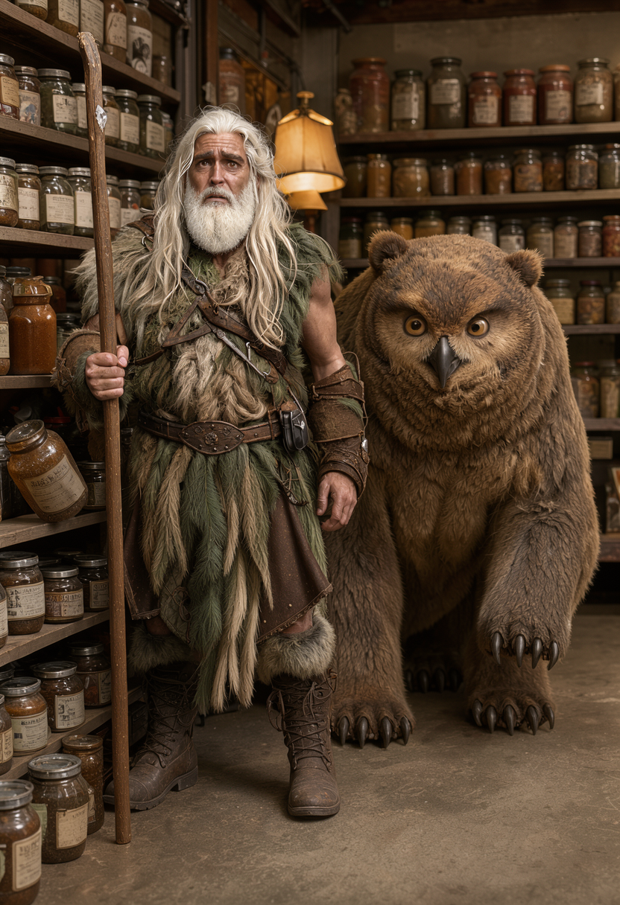

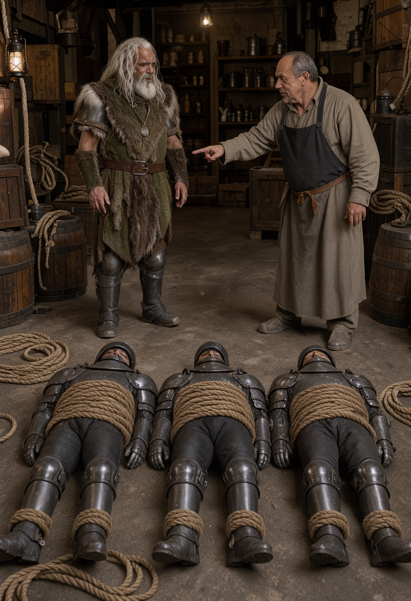
S3 · The shakedown — Lie, pouch, pan.
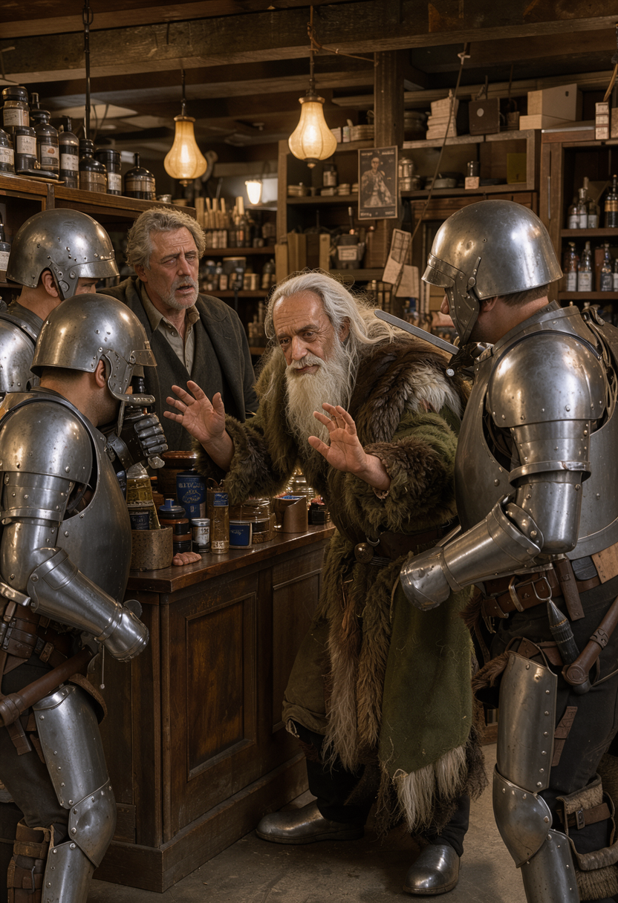
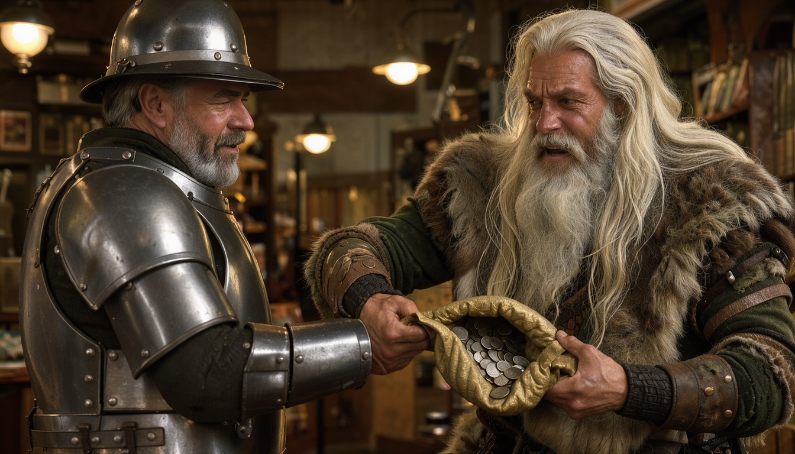
S4 · The takedown — Sweep, WHANG, rope.
Chapter 8 — The House That Taste Forgot
The notes go quiet here — Chip out the back, the party walking north, a stretch of evening the record simply skips — so allow me a Dungeon Master's privilege: I will tell you they arrived, because the next thing anyone says is Vadania insulting a millionaire's furniture, and you do not get there without walking uphill past all the houses that cost more than your campaign.
The mansion at the north address is opulent the way a dragon's hoard is opulent: enormous, gleaming, and arranged by someone with no coherent theory of arrangement. Tapestries beside calligraphy beside fine furniture inactively feuding styles. The foyer is a museum of money curated by a committee that hated each other. Vadania takes one look and says what everyone is thinking: "You paid real good money for an interior decorator, eh?"
The butler does not blink. "Pardon me while I go somewhere else and pretend that you have taste." And then — because this butler moonlights as a war crime — a flicker of magic crosses the room and Vadania takes four points of psychic damage. Vicious Mockery. A spell whose entire function is insulting someone so precisely that it wounds. The butler used a first-level enchantment as a review of Derek's manners, and Derek, holding an arrow's worth of dignity, retreats outside to cover the door, muttering, "The house, because apparently the room ain't enough." Four damage. Infinite disrespect. I have run boss fights with less efficient villains.
"Do be careful," the butler tells the room at large. "Don't touch anything." He exits to fetch the quest giver. The party, alone in a mansion full of traps and treasure, does what comes naturally: they look around, and roll poorly, and learn nothing. "Holy. We are blind," somebody reports. Established facts of the foyer: the rug is pretty. It is dark in here. This is the party that clocked uniform tailoring differences at fifty paces, defeated by interior lighting.
Keechwah proposes Detect Magic — check for traps, check for loot, check for stealable loot, the usual warlock due diligence — and casts it, spending a real spell slot (a spell costs one, and they're gone till he sleeps), and I ask Aaron to roll me a d4 — a four-sided die. Even, it works. Odd, it doesn't. The die comes up odd. And here the session changes temperature, because what happens is not a fizzle. Keechwah reaches down for the wellspring his patron grants him — the place his magic comes from, the relationship he has spent the session cultivating like a garden — and it is not there. Nothing. Not resistance. Absence. He stares at his own empty hand while two thinning purple wisps curl up out of nothing and die, and Derek, watching a warlock misfire, says the table's line for it: "Go do the Aaron thing and go touch something." Even the ranger thinks this is a him problem now.
Then Keechwah hears his name. A voice, familiar the way childhood bedrooms are familiar, speaking directly into the back of his mind where no one else can hear it. His patron. It has been a long time since they communed, and the timing — the exact timing, the moment his magic fails in a strange dark room — is doing a lot of work. He tries to answer mentally, to ask for guidance, for anything. Silence. Blocked, or absent, or simply — his word, and I am keeping it — wily.
He tells the party straight: "My magic comes from my patron. They're… absent." No joke in it. The table goes quiet in the particular way tables go quiet when the person who finds the hidden posters says the magic is gone. The scholar who constructs his power is holding an empty hand, and something in the dark just said his name like it owns him.
The butler returns before anyone can sit with that. He clears his throat. And announces Lady Filvenar.
She is five and a half feet of intent: fire-red hair in a mid-back Celtic-knot braid, clean complexion, gray eyes — gray, in a human, which should not work and absolutely does — white pirate shirt under a tight corset, trousers, boots, a rapier with a mother-of-pearl grip. Ready, as I described her that night, to go out and do just about darn near anything. "Ah," she says, looking over five battered adventurers and one butler like a woman reading a menu she already ordered from. "Finally somebody here to take on my quest. Please have a seat."
Cut across town. A bell dings over a shop door. "Colorful Creations" — Thumba's place, apothecary jars and broadcast stone and lamplight — and a sprightly gentleman bounces out, delighted to the molecular level to see a customer: "Hello, dear boy, what can I do to help you today?"
Chip holds the note. The guards are tied up in a cellar. The patron is silent. The quest giver is seated. End of session.
Journal 02 hook: the forgetfulness remedy, the star-marked extortionist, and whatever — or whoever — whispered Keechwah's name in the dark.
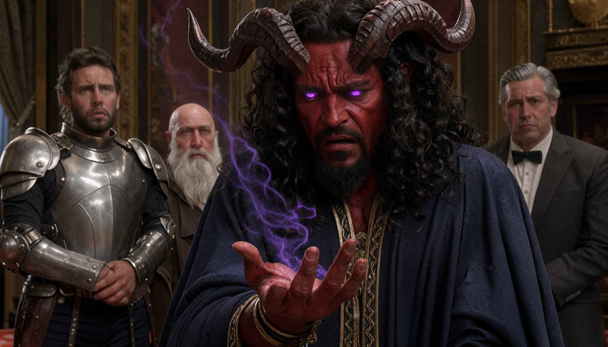
S5 · The fizzle — Empty hand. Unheard voice.